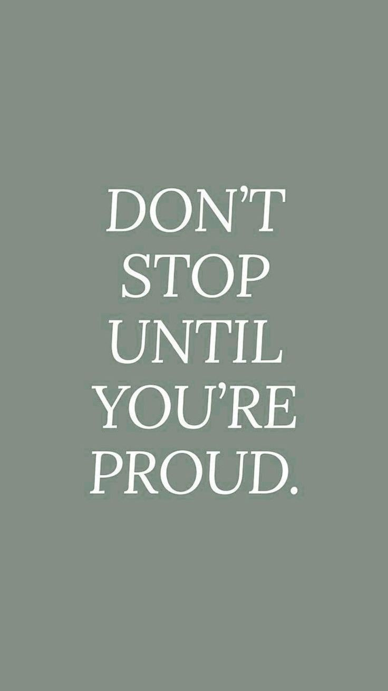
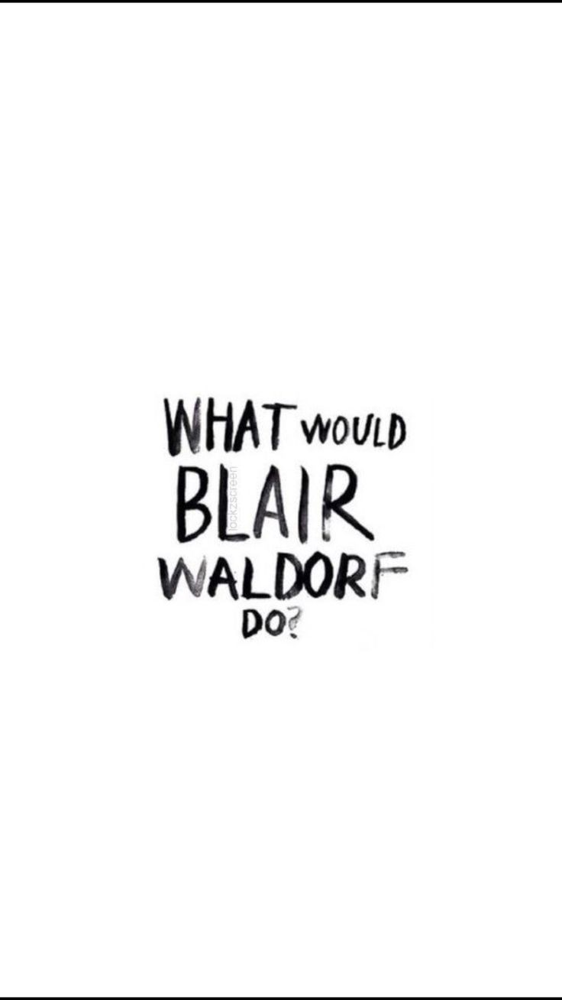
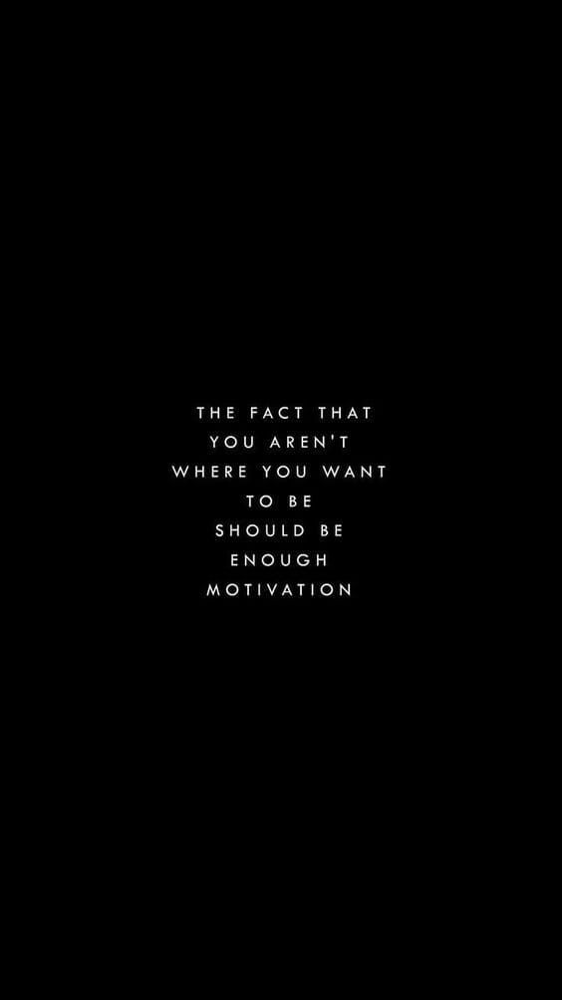
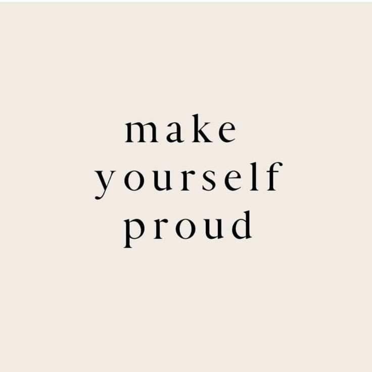
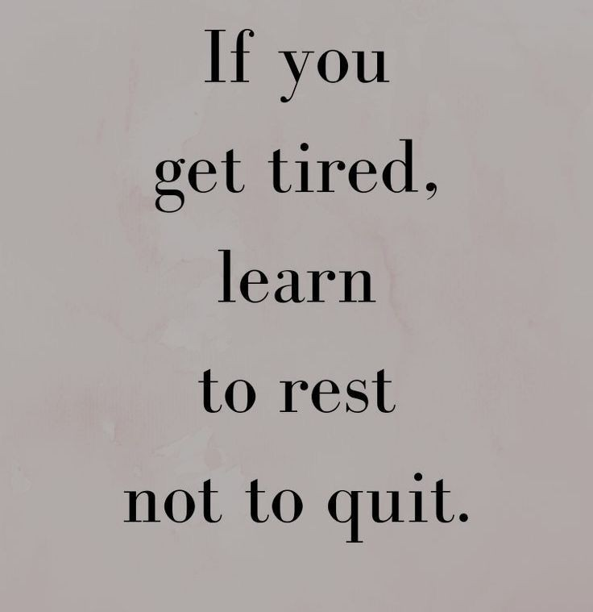
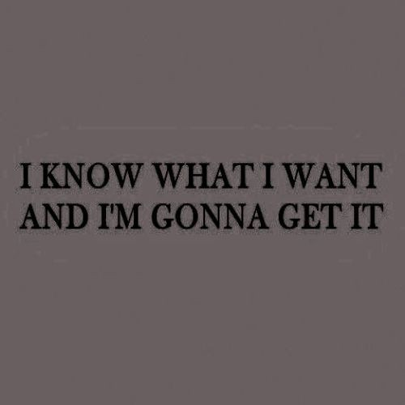
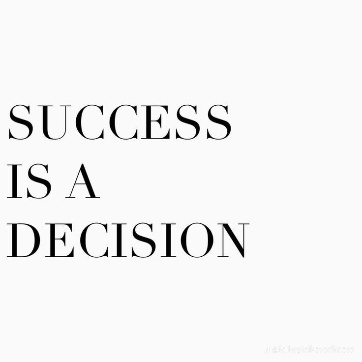
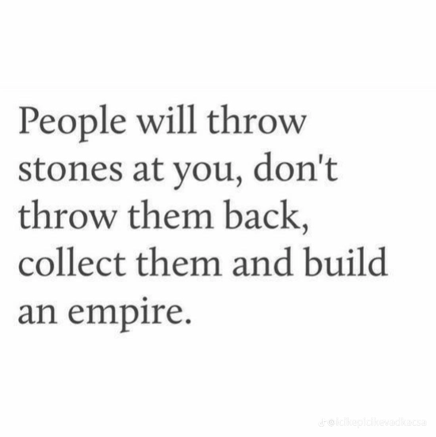
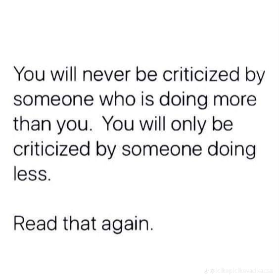

Stars let's be honest,
we all have those moments when we want to do something. We don’t feel like doing or we want to try new things.
We put goals but after a week or so we get unmotivated which is completely normal. But then when you don’t do it you feel bad.
So here we post some quotes that will help you stay motivated and make you accomplish the goals you’ve set.
"I don't chase i attcat what's meant for me will simply find me." -Kendall Jenner
"Stay focused and trust the process." -Gosip girl
"Everything you lose is a step you take" -Taylor Swift
  "Be proud of who you are." -Eminem
"Do it for the people who want to see you fail." -Robert Downey Jr
"I want it i got it."-Ariana Grande
  "The fact that you aren't where you want to be should be enough motivation."-
"If things are not falling you are not inovating enough"-Elon Musk
"Nobody else matters."-Childish Gampino
  "You can lead a hourse to water but you can't force it to drink."- Mama Gadzhi
"A winner is a loser who tried one more time."-George M. Moore
"If you're afraid- don't do it if you're doing it-don't be afraid."-Genghis Khan